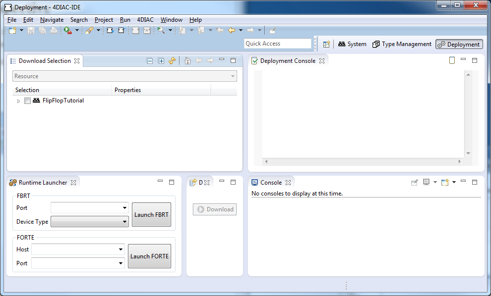

4DIAC-IDE Perspectives
The 4DIAC-IDE provides four perspectives, which can be added by the  button in the upper right corner:
button in the upper right corner:
- System perspective with
- System Manager including IEC 61499 System Model
- System Configuration with
- Devices according to the IEC 61499 Device Model
- Resources according to the IEC 61499 Resource Model, which is used for Application mapping and insertion of communication Function Blocks to other Devices and Resources
- Segments e.g., for communication over Ethernet
- Applications according to the IEC 61499 Application Model and found under 4DIAC-IDE System Model
- Type Management perspective which allows to manage the available Function Block types
- Deployment perspective where the Applications are launched and tested
- 4DIAC Debug perspective where Applications can be monitored
System Perspective
In the right upper corner the perspective can be changed. The System perspective is reached by the button. The System perspective is divided into the following five areas.
- System Management Area which is used for the management of IEC 61499 compliant applications and to configure Devices and Resources
- Editor Area which contains the Application editor for modelling of control applications, the System Editor for modelling the System configuration and the Device and Resource editor for modelling the Resource configuration
- Property view which allows the parameterization of Function Block instances, Devices and Resources
- Outline of Applications, System configurations, Devices and Resources
- Type Navigator which lists the available Function Block library for every System as well as the default library

Type Management Perspective
In the right upper corner the perspective can be changed. The Type Management perspective is reached by the  button. The Type Management perspective is divided into the following three areas.
button. The Type Management perspective is divided into the following three areas.
- Type Navigator for the management of different type libraries, tool and project specific ones as well as the management of IEC 61499 element types
- Type Editor for the modification of IEC 61499 element types, like Basic, Composite, and
Service Interface Function Block Types
- Outline of FB types

Deployment Perspective
In the right upper corner the perspective can be changed. The Deployment perspective is reached by the button. The Deployment Management perspective is divided into the following four areas.
- Download Selection for the selection of a System, Devices or Resources which have to be deployed to controller runtimes
- Visualisation of download messages
- Runtime Launcher and Download Button which start the deployment process and launch IEC 61499 compliant runtimes

Debug Perspective
In the right upper corner the perspective can be changed. The Debug perspective is reached by the  button. The Debug perspective is divided into the following five areas.
button. The Debug perspective is divided into the following five areas.
- System selection where Systems can be marked for monitoring with right click and choosing Monitor System
- Outline
- Breakpoints view which lists the defined breakpoints and allows their activation and deactivation, this feature is currently not supported
- Watches view which allow to watch the actual values of the variables you marked for watching
- Application editor which shows your Application and highlights the variables marked for watching